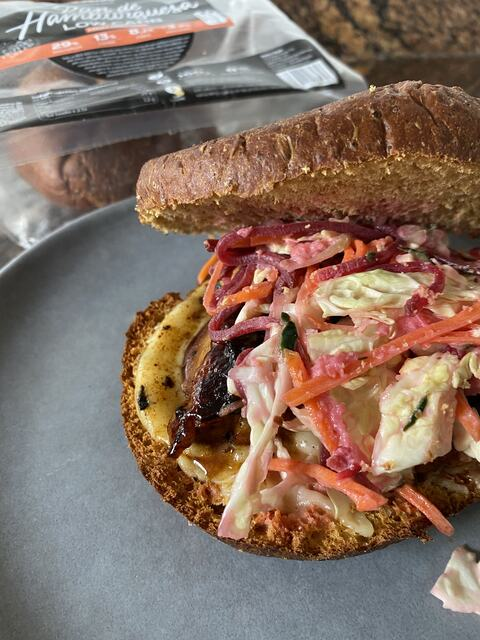

Receta · Plato principal · 15 min aprox.
Bocata de Pollo BBQ con Cole Slaw
Bocata de Pollo BBQ con Cole Slaw es una receta fácil con Mezcla de Pan de hamburguesa, lista en unos 15 minutos. Lleva contramuslo de pollo deshuesado y sin piel, salsa BBQ sin azúcar añadido y comino en polvo, y es perfecta para una comida o una cena. Mezcla de Pan de hamburguesa aporta 29 g de proteína por cada 100 g de producto terminado.
14 ingredientes5 pasos15 min aprox.
 Hecha conMezcla de Pan de hamburguesa1 kgVer producto
Hecha conMezcla de Pan de hamburguesa1 kgVer productoIngredientes
- Pan de Hamburguesa Low Carb
- Contramuslo de pollo deshuesado y sin piel
- Salsa BBQ sin azúcar añadido
- Comino en polvo
- Agave
- Col en juliana
- Manzana roja rallada
- Pepino rallado
- Zanahoria rallada
- Remolacha rallada
- Mayonesa light
- Zumo de limón
- AOVE
- Sal
Información nutricionalListo en 15 minutos
Preparación
- 01Marinar el pollo con salsa BBQ, comino y agave
- 02Cocinar a la plancha hasta que esté tierno y jugoso
- 03Mezclar la mayonesa light con zumo de limón, sal, agave y AOVE
- 04Combinar con los vegetales rallados para el cole slaw
- 05Montar el bocata con el pan, el pollo y el cole slaw, con queso gratinado